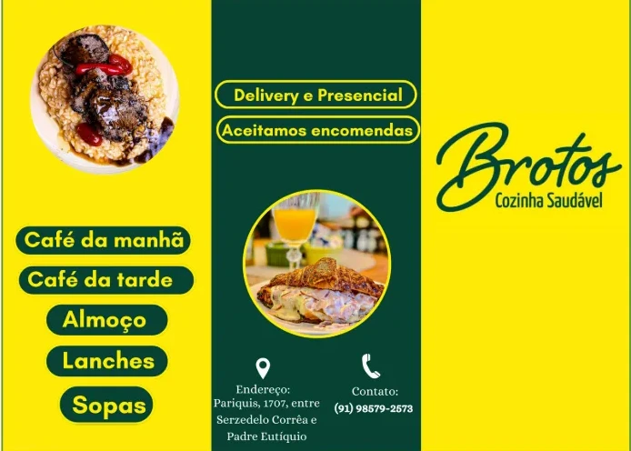

Voltar ao portfólio
Identidade visual · Design gráfico · Marketing
Brotos
Identidade e peças visuais para uma marca com linguagem orgânica e leve.

Galeria
Fotos do projeto

Identidade visual · Design gráfico · Marketing
Identidade e peças visuais para uma marca com linguagem orgânica e leve.
